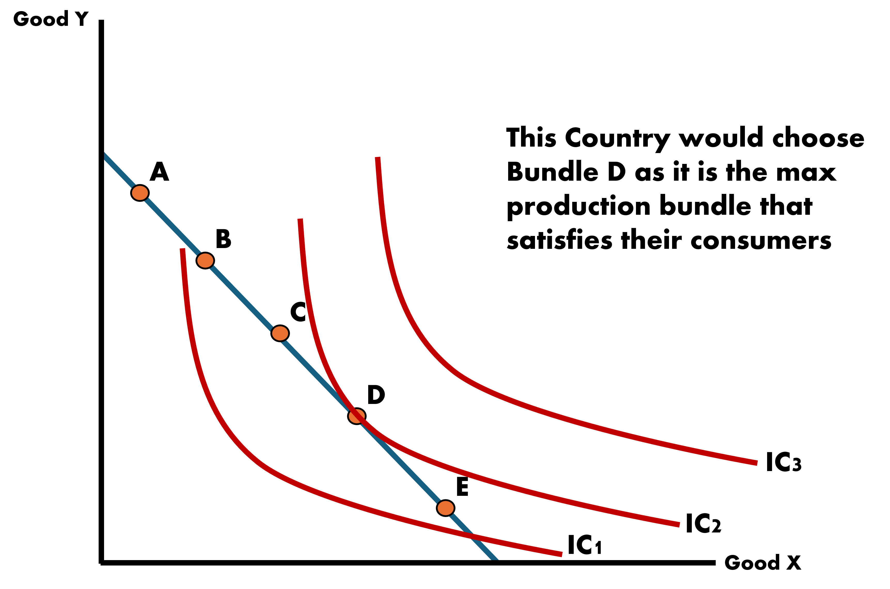
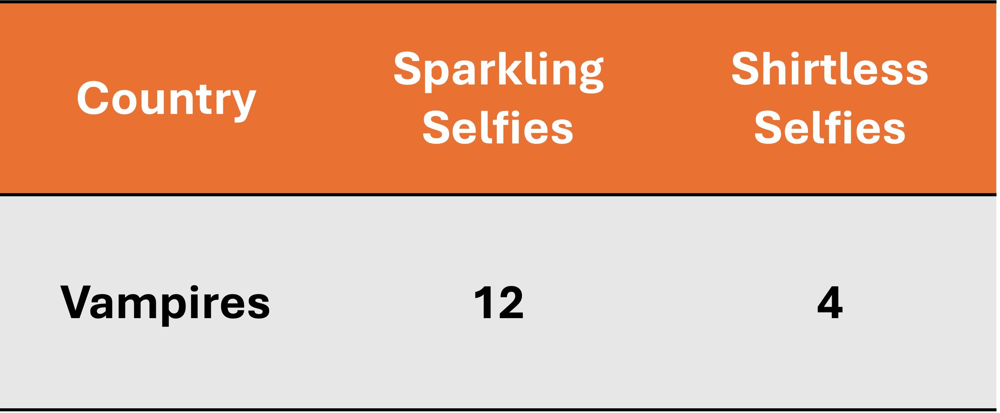

Random Variables
EC 380 - Ricardian Model
2025
Why Trade?
Quick Recap
Why does trade occur? This is our main question.
There are two strands within the field of international trade:
I. Neoclassical Models of Trade (‘Old Theories’):
- Ricardian Model \(\Rightarrow\) Technology differences spur trade
- Hecksher-Ohlin Model \(\Rightarrow\) Resource differences spur trade
II. ‘New’ Trade Theory:
- Krugman Model \(\Rightarrow\) Demand/Want of variety spurs trade
- Melits Model \(\Rightarrow\) Heterogenous firms drive trade
US Imports Snapshot
In 2022, the US imported $316M in Toothbrushes.
Roughly 56% from China alone. Next noticeable sources are Germany, Switzerland, and India.
The US represents the largest economy in the world. But it still resorts to import of goods at a level that far exceeds what it exports.
As an example, while 99% of shipping containers that enter the Los Angeles port are fully loaded with goods, 70% of containers leaving the port are empty!
Imports
Exports
Reasons for Trade
With all the manufacturing capacity of the US, why not make toothbrushes at home and consume them domestically?
- Technology differences in each country?
- Total resources available differ by country?
- Production cost differences?
- Proximity to countries with more productive labor forces?
For now, let’s consider the opportunity cost of doing so. The Ricardian Perspective says that the US devotes domestic labor that would otherwise be used to produce these toothbrushes to comparatively more productive tasks.
Comparative Advantage
During the 16th and 17th century, the study of economics was in its infancy. Misguided beliefs in public policy were widely held across nations.
Mercantalism: A stockpile of gold and silver was considered an appropriate barometer for the state of the domestic economy
Imports \(\Rightarrow\) Less gold
Exports \(\Rightarrow\) More gold
Tariffs are set high to prevent trade deficits’
Ricardo would demonstrate that under balanced free trade (no tariffs), trade then benefits every country
Ricardo’s Logic
If every country exports the goods in which they have the comparative advantage in, then every country benefits from trade
Let’s view at an example
- Two countries: Portugal and England
- Two goods: Wine and Cloth
- Portugal has the absolute advantage in production of both goods
- England is particularly bad at making wine, which makes it relatively good at producing cloth
England has the comparative advantage in cloth. Portugal has the comparative advantage in wine.
Ricardo says that both are better off trading than under autarky
Autarky
Autarky
Definition: The complete absence of foreign trade; total self-sufficiency of a national economy
To understand how trade affects national welfare, we have to understand how they do on their own
We can do this by looking at the Production Possibilities Curve (PPC)
- These show the trade-offs when a country chooses their production combination of two goods
- It is closely related to the opportunity cost of the good on the horizontal axis
Production Possibilities Curves (PPC)
For the moment, we will be dealing with PPCs that look like straight lines because we assume that the trade-off between two goods does not change
- This follows from an assumption we make on labor: Labor is homogeneous and no group of workers is more skilled than another group
How are they related to opportunity costs?
Opportunity costs are the best forgone alternative: In order to produce 1 unit of good X, the country has to give up some amount of good Y.
- Because this is a “rate of change”, we say that the slope of the PPC is the Opportunity Cost of good X
Production Possibilities Curves (PPC)
Country’s PPC Between X & Y

Production Possibilities Curves (PPC)
Country’s Bundle Choices Between X & Y

- Point A: Producing at an inefficient and wasteful level
- Point B: Efficient point of production where maximum level of output is obtained
- Point C: Infeasible. The country does not have the resources to produce at this level
How Does a Country Optimally Choose?

Choice depends on the country’s demand for the two goods
We call these Indifference Curves
Each curve shows the consumption bundles of goods that the economy can consume and be equally satisfied
The consumers are indifferent in its own preference across the bundles on a particular indifference curve
Indifference Curves
Back to the Ricardo Model
Starting with the Ricardo Model, we look at it’s primary components:
- Single Factor of Production (Labor)
- Two-Country Model (Home and Foreign)
- Technology differences across countries
We will use our own example
- Factor of production: Labor (L)
- Two Countries: Home and Foreign
- Two Goods: Coffee and Tea
- Suppose that in this case, the Home Country exports coffee and imports tea
- What would this imply about which good each country has comparative advantage in?
Ricardo Model Assumptions

Creating PPFs
Let each country have a labor force size of 10 and productions be:
We find the PPF intercepts by seeing how much a country will produce if their entire work force only produces one good
Home would produce:
\[\begin{align*} &\text{Coffee:} \; L * \text{units} = 10 * 9 = 90 \\ &\text{Tea:} \; L * \text{units} = 10 * 7 = 70 \end{align*}\]
Home PPF

Slope of PPF is Opportunity Cost of Good X
Which is how much units of tea do I give up to make one more unit of coffee
\[ \text{Slope of PPF} = \dfrac{\Delta \text{Tea Ouptut}}{\Delta \text{Coffee Output}} = \dfrac{-7}{9} = \text{(-)Opportunity Cost of Coffee} \]
Introducing some Key Variables - Marginal Product of Labor
Marginal Product of Labor (MPL): Represents the additional units of a good produced, given a one unit increase in the number of workers assigned to a particular task
The MPL for the Home Country for each good is written as \(\text{MPL}_{c}^{H}\) and \(\text{MPL}_{t}^{H}\), for coffee and tea respectively.
We can assign numbers to each such that:
\[ \text{MPL}_{c}^{H} = 9 \;\;\;\; \& \;\;\;\; \text{MPL}_{t}^{H} = 7 \]
Let’s also say that the country has a full labor force \(\bar{L} = 10\)
We will add the Foreign Country later
Home PPF
We can plot the Home PPF by finding the intercepts for each good. We can do this by multiplying the marginal product of labor by the workforce size
\[ \text{MPL}_{\text{good}}^{\text{country}} * \bar{L} \]
The Home Country produces
\[\begin{align*} Q_{\text{coffee}}^{H} &= 9 * 10 = 90 \\ \\ Q_{\text{tea}}^{H} &= 7 * 10 = 70 \end{align*}\]
Home PPF
Assume: PPF is a straight line due to the constant MPLs
Slope of PPF: Equal to the marginal rate of substitution between goods (Coffee & Tea)
\[ \text{Slope of PPF}^{H} = -\dfrac{\text{MPL}_{t}}{\text{MPL}_{c}} = -\dfrac{7}{9} \]
This is also the Opportunity Cost of coffee. So we can say that if we want one more unit of coffee we must trade off tea at a rate of \(\dfrac{7}{9}\)
Equivalently, the opportunity cost of tea would be \(\dfrac{9}{7}\) units of coffee
Home Prices
We can determine prices in the country from this information as well. We assume to be under Perfect Competition which means that all goods are sold at cost.
Prices
These are in terms relative to both goods and measured in units:
\[ P_{c}^{H} = \dfrac{\text{MPL}_{t}}{\text{MPL}_{c}} = \dfrac{7}{9} \;\;\;\;\; \& \;\;\;\;\; P_{t}^{H} = \dfrac{\text{MPL}_{c}}{\text{MPL}_{t}} = \dfrac{9}{7} \]
Home Wages
We use the Perfect Competition assumptions to also determine wages
Wages
Workers are paid the equivalent of their MPL times the price of that additional unit they produce:
\[\begin{align*} \text{wages}_{\text{coffee}} &= \text{P}_{\text{coffee}} * \text{MPL}_{\text{coffee}} \\ \\ \text{wages}_{\text{tea}} &= \text{P}_{\text{tea}} * \text{MPL}_{\text{tea}} \end{align*}\]
Home Wages Across Industries
Additionally, because we assume that labor moves freely between industries, we can assume that wages are equalized across industries
\[ \text{wages}_{\text{coffee}} = \text{P}_{\text{coffee}} * \text{MPL}_{\text{coffee}} = \text{P}_{\text{tea}} * \text{MPL}_{\text{tea}} = \text{wages}_{\text{tea}} \]
We can rearrange this such that the price ratio is equal to the MPL ratio
\[ \dfrac{\text{P}_{\text{coffee}}}{\text{P}_{\text{tea}}} = \dfrac{\text{MPL}_{\text{tea}}}{\text{MPL}_{\text{coffee}}} \]
Relative price of coffee is equal to the Opportunity Cost of coffee at the autarky/no-trade equilibrium
Foreign PPF, Prices, and Wages
We can find the Foreign Country results as well
Find them for yourself. Let:
\[ \text{MPL}_{c}^{F} = 10 \;\;\;\;\; \& \;\;\;\;\; \text{MPL}_{t}^{F} = 12 \;\;\;\;\; \& \;\;\;\;\; \bar{L} = 10 \]
Tasks
- Graph the Foreign Country PPF
- Slope of \(\text{PPF}\)
- Opportunity Cost of coffee and tea
- Prices for both goods
Foreign Country
Foreign PPF

Opportunity Costs
- Coffee: \(\dfrac{12}{10}\) \(\;\;\) & \(\;\;\) Tea: \(\dfrac{10}{12}\)
Prices
- Coffee: \(\dfrac{12}{10}\) \(\;\;\) & \(\;\;\) Tea: \(\dfrac{10}{12}\)
Comparing Countries
Who Has the Advantage?
We can compare both countries and determine who has an advantage in production
We work with two types of advantages:
- Absolute Advantage: If the country produces more per labor input
- Comparative Advantage: If the country’s Opportunity Cost of producing a good is lower than the other country
Who Has the Advantage?
Now we have two countries, we can begin to compare their Marginal Productivities of Labor
A nation has the Absolute Advantage in a good if they produce more per labor input
A nation has the Comparative Advantage if the Opportunity Cost of producing a good is lower than that of the other country
Absolute Advantage
Foreign in both goods
Comparative Advantage
Home in Coffee | Foreign in Tea
Choosing Production Based on Preferences
Under Autarky, every country has to produce as much as they want to consume
We saw that the production bundle is determined by the country indifference curve
We won’t go into how we determine preferences, but we will figure out how to get exact bundles based on a pre-determined mix of goods
We are looking for a point where 2 curves (lines) touch
Which is equivalent to finding out at which coordinates they are equal to each other
We will have 2 equations (PPF & Preferences) and 2 unknowns (Good X and Good Y)
Choosing Production - Example
Let there be two countries, one belongs to the Vampires and the other to the Wolves with the following productivities and a labor force size of \(\bar{L} = 20\)
We will focus on the Vampires for this example:
They have prefer to consume 3 Sparkling Selfies for every 2 Shirtless Selfies
We will find how many Sparkling and Shirtless selfies the Vampires need to produce in order to satisfy demand
Vampires Production Bundle
\[ \bar{L} = 20 \]
We will:
- Find the PPF intercepts
- Find the proportion in which they prefer to consume the goods
- Determine the PPF line
- Set preferences proportion equal to PPF line and solve
Find PPF Intercepts
Looking only at the Vampires with \(\bar{L} = 20\)
We need to find the maximum they can produce for each good:
Sparkling
\[\begin{align*} \text{Max Sparkling} &= \text{MPL}_{spark} * \bar{L} \\ \text{Max Sparkling} &= 12 * 20 \\ \text{Max Sparkling} &= 240 \end{align*}\]
Shirtless
\[\begin{align*} \text{Max Shirtless} &= \text{MPL}_{shirt} * \bar{L} \\ \text{Max Shirtless} &= 4 * 20 \\ \text{Max Shirtless} &= 80 \end{align*}\]
Preference in Consuming Goods
We were told that Vampires prefer to consume 3 Sparkling selfies for every 2 Shirtless selfies
Let’s see how this translates to our indifference curve concept
\[\begin{align*} \dfrac{\text{Sparkling}}{\text{Shirtless}} = \dfrac{3}{2} \\ \end{align*}\]
\[\begin{align*} \dfrac{\text{Sparkling}}{\text{Shirtless}} &= \dfrac{3}{2} \\ 2 * \text{Sparkling} &= 3 * \text{Shirtless} \\ \dfrac{2}{3} * \text{Sparkling} &= \text{Shirtless} \end{align*}\]
Determining the PPF Line
The PPF Line
\[\begin{align*} \text{Y} &= b \pm mx \\ \text{Y} &= 80 - \dfrac{80}{240} * x \\ \text{Y} &= 80 - \dfrac{1}{3} * x \end{align*}\]
Putting It Altogether
Because we are finding where Production equals Demand, we are finding where these two equations equal each other
\[ \text{Shirtless} = \dfrac{2}{3} * \text{Sparkling} \;\;\;\;\; \& \;\;\;\;\; \text{Shirtless} = 80 - \dfrac{1}{3} * \text{Sparkling} \]
\[\begin{align*} \dfrac{2}{3} * \text{Sparkling} &= 80 - \dfrac{1}{3} * \text{Sparkling} \\ \left(\dfrac{2}{3} + \dfrac{1}{3} \right) * \text{Sparkling} &= 80 \\ (1) * \text{Sparkling} &= 80 \\ \text{Sparkling} &= 80 \end{align*}\]
Putting It Altogether
We know that Vampires will make 80 Sparkling selfies
Now we need to find how many Shirtless selfies they make:
There are two ways to find this out:
\[ \text{Shirtless} = \dfrac{2}{3} * \text{Sparkling} \;\;\;\;\; \text{or} \;\;\;\;\; \text{Shirtless} = 80 - \dfrac{1}{3} * \text{Sparkling} \]
\[\begin{align*} \text{Shirtless} &= \dfrac{2}{3} * 80 \\ \text{Shirtless} &\approx 53.3 \end{align*}\]
\[\begin{align*} \text{Shirtless} &= 80 - \dfrac{1}{3} * 80 \\ \text{Shirtless} &= 80 - 26.67 \\ \text{Shirtless} &\approx 53.3 \end{align*}\]
Results!
By knowing in which proportion consumers prefer their goods, we can find how much the country will produce under autarky
We could also figure out what happens to production if there is some form of shock to the economy, for example:
- Preferences change
- Labor increases/decreases
- Productivities change
Trade
Why Would Foreign Trade?
Foreign is outright better at producing Coffee & Tea than Home. How could they benefit from trading with a less productive country?
If Foreign doesn’t trade, they are bound by their own production possibilities. With trade, they can exceed their own production capacities, even when they hold an Absolute Advantage
The same logic can be applied to Home. They will be able to exceed domestic production capacity by trading.
To trade, both nations must be better off from doing so. This will mean that the relative price of the good should fall somewhere in between both markets
Prices for each country are just the opportunity costs of the good
Gains from Trade - Home
The relative price of the good in the world market should fall somewhere in between both countries prices
\[\begin{align*} P_{c}^{H} &< P_{c}^{W} < P_{c}^{F} \\ \\ \dfrac{7}{9} &< P_{c}^{W} < \dfrac{12}{10} \end{align*}\]
Let the World Price be \[ P_{c}^{W} = 1 \Rightarrow \text{Slope} = -1 \]

Gains from Trade - Foreign
The relative price of the good in the world market should fall somewhere in between both countries prices
\[\begin{align*} P_{c}^{H} &< P_{c}^{W} < P_{c}^{F} \\ \\ \dfrac{7}{9} &< P_{c}^{W} < \dfrac{12}{10} \end{align*}\]
Let the World Price be \[ P_{c}^{W} = 1 \Rightarrow \text{Slope} = -1 \]
Free Trade
There are gains to be had for both countries to benefit from trade. How do we determine who produces what?
The pattern of exports and imports is determined by Opportunity Costs of production in each country.
Countries will export the good in which they have the Comparative Advantage and import the other good \(\Rightarrow\) they will specialize and only produce the export good
We can think of this in terms prices as well:
- The price of coffee at Home is 7/9 and at Foreign is 12/10
- There is a higher return for Home Producers to sell their coffee in Foreign so they will export
Gains From Trade When Specialization Occurs
Home Makes Only Coffee
Foreign Makes Only Tea

Gains From Trade With No Absolute Advantage
What matters most for the purposes of trade is not a country’s absolute advantage but its comparative advantage
- Differences in absolute advantage do not eliminate gains from trade
Up until now, we have not mentioned wage differences across countries.
- This is something that is usually talked about in the real world when we hear about concerns of exploitation in foreign countries or offshoring of jobs
Living Standards / Incomes Across Countries
The price of goods we just found were relative prices which means it is a ratio of the value of one good over the other
We assumed \(P_{c}^{W} = 1\) which means that the actual price of goods are equal to each other, not that one unit of coffee is worth $1
Knowing relative prices allows us to find relative wages as well:
- Economies operate under Perfect Competition which implies zero profits
- Workers are paid at cost of producing the good
- Workers earn “units of goods” they produce
- Since we know relative prices, we can figure out relative wages
Living Standards / Incomes Across Countries
Let the price of a unit of coffee be $3. If the relative world price is 1, then what is the world price of tea?
- Price of tea is also $3
Each Home worker makes 9 units of coffee per labor unit. Since they get paid what they produce, wages are simply:
\[ \text{wage}_{c}^{H} = \text{productivity} * P_{c}^{W} = 9 * 3 = 27 \]
\[ \text{wage}_{t}^{F} = \text{productivity} * P_{t}^{W} = 12 * 3 = 36 \]
The relative wage of Home workers is \(\dfrac{w^{H}}{w^{F}} = \dfrac{27}{36} = \dfrac{3}{4}\)
Flaws of the Ricardo Model
The Ricardian Model does a great job at providing a basic prediction that countries should tend to export goods in which they have relatively high productivity
- This has been confirmed by studies over the years
But it is not without some faults:
- It predicts an extreme degree of specialization that we do not observe in the real world
- It assumes away effects of trade on the distribution of incomes within countries which ignores the fact that not all benefit from trade equally
- Misses differences in resources among countries
- Our next model addresses this
Next Topic
- Heckscher-Ohlin Trade Model
Reading
Assignment(s) DUE BEFORE CLASS!
EC380, Lecture 01 | Ricardian Model